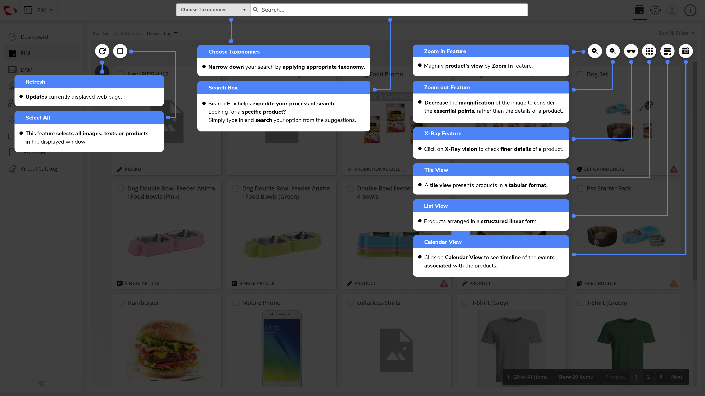

Exploration de l’Interface Utilisateur¶
Ces captures d’écran vous guideront à travers l’interface utilisateur de contentserve :
Mise à jour
- Mises à jour de la page actuellement à l’écran
Sélectionner tout
- Cette fonction permet de sélectionner toutes les images, textes et produits de la fenêtre à l’écran
Sélectionner des Taxonomies
- Affinez votre recherche en appliquant la taxonomie appropriée
Moteur de recherche
- Le moteur de recherche permet d’accélérer votre processus de recherche.
Vous cherchez un produit spécifique ?
Il suffit de taper et rechercher votre option parmi les suggestions. Zoom avant
- Agrandissez le produit en zoomant.
Fonction de zoom arrière
- Diminuer l’agrandissement de l’image pour considérer les points essentiels, plutôt que les informations détaillées du produit.
Fonction de rayon X
- Cliquez sur Vision X-Ray pour consulter les informations les plus détaillées d’un produit.
Écran titre
- Un écran titre présente les produits dans un format tabulaire.
Écran liste
- Produits disposés sous une forme linéaire structurée.
Écran calendrier
- Cliquez sur l’écran calendrier pour voir la chronologie des événements associés aux produits.

Campagne
L’onglet Campagne affiche toutes les campagnes que vous avez créées pour vendre vos produits en période de fêtes ou n’importe quelle occasion spéciale.
Promotion
Toutes les promotions que vous avez l’intention de proposer à vos clients apparaissent dans cet onglet.
Fournisseur
Cet onglet affiche les données de tous les fournisseurs inscrits.
Textes
Téléchargez vos blogs, descriptions détaillées et autres textes liés aux produits dans cet onglet.
Catalogue virtuel
L’onglet Catalogue virtuel affiche les collections enregistrées pour un mois ou une occasion spécifique. Un détaillant peut transmettre le catalogue sur n’importe quel canal de sortie. Ex. : une collection de printemps (tissus ou produits habituellement achetés au printemps).
Favoris
Les recherches et filtres peuvent être ajoutés à vos favoris pour un accès plus rapide à l’avenir. Les nouveaux produits, s’ils sont ajoutés, avec des critères similaires seront reflétés lors de nouvelles recherches.
Collection
Ajoutez des produits à une collection temporaire ou permanente d’objets.
Tris et filtres
Classez vos produits et triez-les pour un accès et une identification simplifiée.

Last updated: May 07, 2018